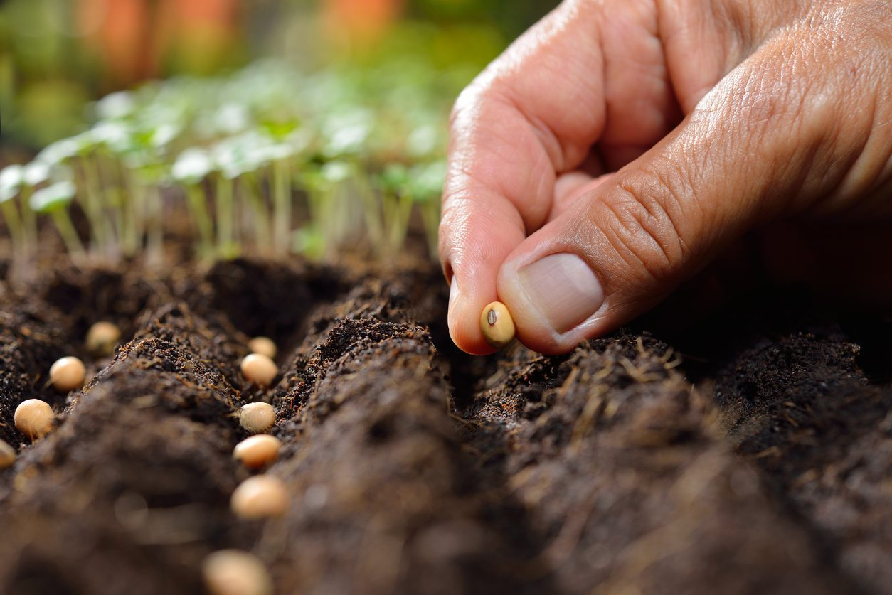

OUR FEATURES

Grow the right

Learn what you sow

Love Agriculture
As a farmer, Agrophile has helped us to know the easy methods to grow our crops. It is very useful.
I can not say enough about what a positive and valuable experience it was with agrophile. Every part of the website, from the beginning to end was well thought out and executed.
Agrophile was a great compliment to our farmers offering opportunities, informations, and practical support